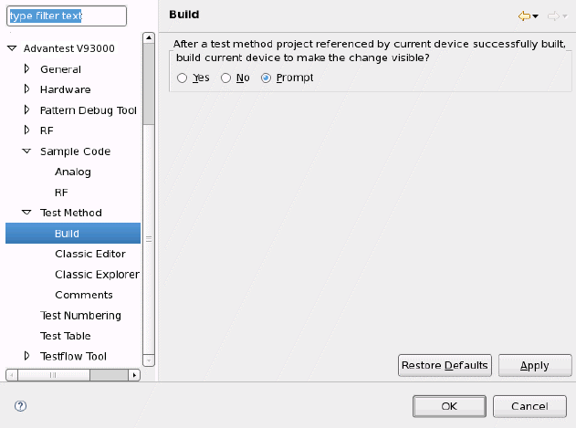

Build preference page
You can change the following option on the preference page.
Option |
Description |
|---|---|
After a test method project referenced by the current device successfully built, build the current device to make the change visible? |
Specify whether to build the device after a referenced UTM project is built. |

Functional changes
- Introduced in SmarTest 6.5.2